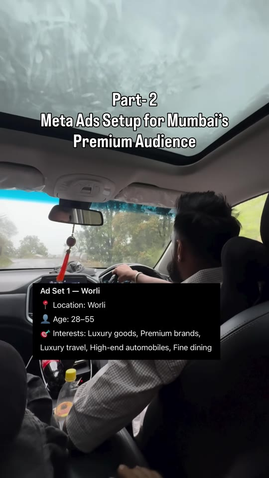
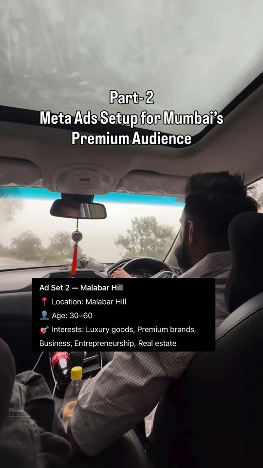
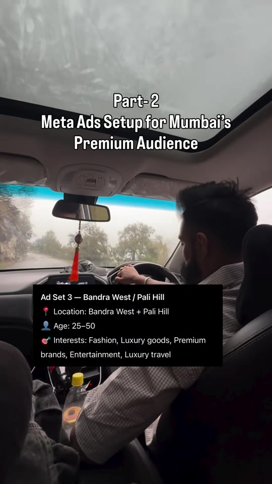
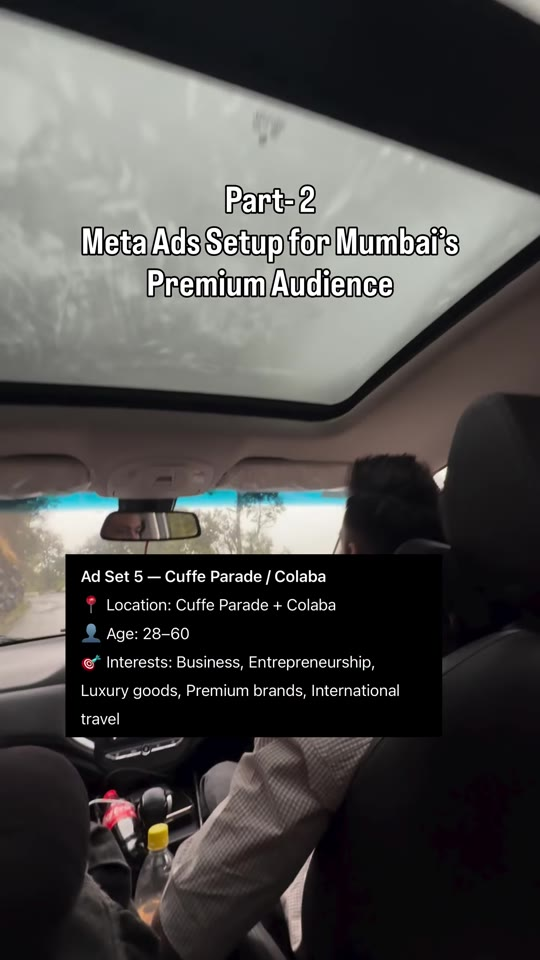
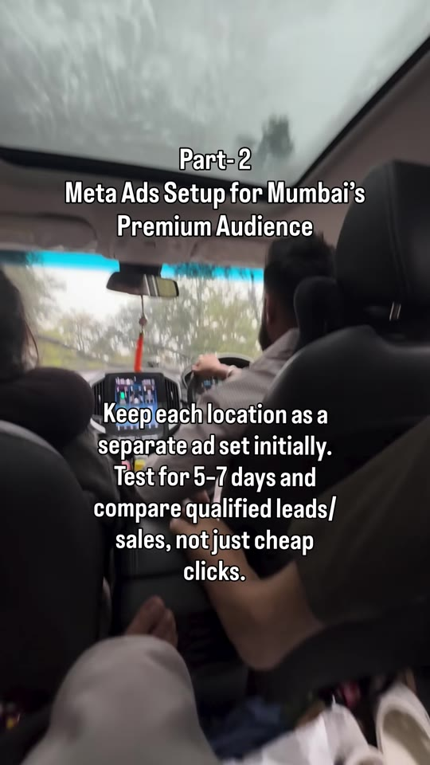

Meta-Ads · Location-Targeting
Meta Ads Geo-Targeting Setup for Mumbai's Premium & Luxury Audiences
A granular Meta Ads audience targeting blueprint for high-ticket services, luxury retail, real estate, and B2B products in Mumbai. Outlines 5 discrete neighborhood ad sets (Worli, Malabar Hill, Bandra West/Pali Hill, Juhu/JVPD, Cuffe Parade/Colaba) layered with affluence-specific interest categories and a 5–7 day isolation testing methodology to evaluate qualified conversions over cheap clicks.

Steps / Workflow
- Isolate High-Income Micro-Neighborhoods: Rather than targeting "Mumbai" as a city-wide DMA, divide campaigns into separate ad sets pinned to top-affluence clusters: Worli, Malabar Hill, Bandra West / Pali Hill, Juhu / JVPD Scheme, and Cuffe Parade / Colaba.
- Calibrate Demographic Age Brackets per Submarket:
- Old-money / corporate hubs (Malabar Hill, Cuffe Parade): Target older demographics (30–60 or 28–60) reflecting established high-net-worth founders, CXOs, and real estate investors.
- Creative / trend-conscious hubs (Bandra West, Pali Hill): Target younger affluent demographics (25–50) with fashion and entertainment overlays.
- Industrialist / family wealth hubs (Worli, Juhu/JVPD): Target 28–55 bracket focusing on luxury goods, high-end autos, and fine dining.
- Layer High-Signal Interest Clusters: Stack specific luxury categories (Luxury goods, Premium brands, High-end automobiles, Fine dining, Luxury travel, International travel, Business & Entrepreneurship) to weed out incidental residents and domestic help.
- Run 5–7 Day Isolation Tests: Run each location as a distinct ad set with independent budgets for 5 to 7 days. Compare cost per qualified lead or high-ticket purchase rather than misleadingly low click costs (CPC).
Neighborhood Targeting Matrix




Verbatim Breakdown
| Timestamp | Screen / Source | Verbatim Content |
|---|---|---|
00:00 |
On-screen text | Part- 2 Meta Ads Setup for Mumbai’s Premium Audience |
00:03 |
On-screen card | Ad Set 1 — Worli • Location: Worli • Age: 28–55 • Interests: Luxury goods, Premium brands, Luxury travel, High-end automobiles, Fine dining |
00:05 |
On-screen card | Ad Set 2 — Malabar Hill • Location: Malabar Hill • Age: 30–60 • Interests: Luxury goods, Premium brands, Business, Entrepreneurship, Real estate |
00:07 |
On-screen card | Ad Set 3 — Bandra West / Pali Hill • Location: Bandra West + Pali Hill • Age: 25–50 • Interests: Fashion, Luxury goods, Premium brands, Entertainment, Luxury travel |
00:10 |
On-screen card | Ad Set 4 — Juhu / JVPD Scheme • Location: Juhu + JVPD Scheme • Age: 28–55 • Interests: Luxury goods, High-end automobiles, Luxury travel, Fine dining, Premium brands |
00:12 |
On-screen card | Ad Set 5 — Cuffe Parade / Colaba • Location: Cuffe Parade + Colaba • Age: 28–60 • Interests: Business, Entrepreneurship, Luxury goods, Premium brands, International travel |
00:14 |
On-screen card | Keep each location as a separate ad set initially. Test for 5-7 days and compare qualified leads/ sales, not just cheap clicks. |
(caption) |
Post Caption | Want to target a premium audience in Mumbai? 🎯 Test Worli, Malabar Hill, Bandra West/Pali Hill, Juhu/JVPD & Cuffe Parade/Colaba as separate Meta Ads ad sets. Layer relevant interests like Luxury, Premium Brands, Business, Entrepreneurship & Luxury Travel. Comment your niche and I’ll make the next reel for your business. 🚀 Mumbai Meta Ads, Meta Ads Targeting, Premium Audience, Lead Generation, Facebook Ads |
Tools & Settings
- Platform: Meta Ads Manager (Facebook / Instagram)
- Location Targeting Type: Pinned Micro-Locations / Postal Codes (Pin-drop with tight radius e.g., 1–3 km or boundary definitions)
- Detailed Targeting Expansion: Advantage Detailed Targeting should be toggled OFF during initial tests to prevent Meta from expanding beyond the defined micro-luxury clusters.
Try This
- Duplicate your core winning ad creative across 5 separate ad sets corresponding to the 5 Mumbai affluent clusters.
- Ensure location settings are configured to “People living in this location” rather than “People recently in this location” to avoid spending budget on transit commuters.
- Set an ad set spend limit or equal budget allocation across the 5 sets for 7 days.
- Track downstream qualified lead qualification rate (CRM qualification or closed revenue) instead of front-end cost per click.
Open Questions
- Meta Ads location targeting currently defaults to “People living in or recently in this location” in many ad accounts; implementing tight pin-drops (1-2 km) and negative exclusions of adjacent lower-income areas is recommended to avoid audience spillover.